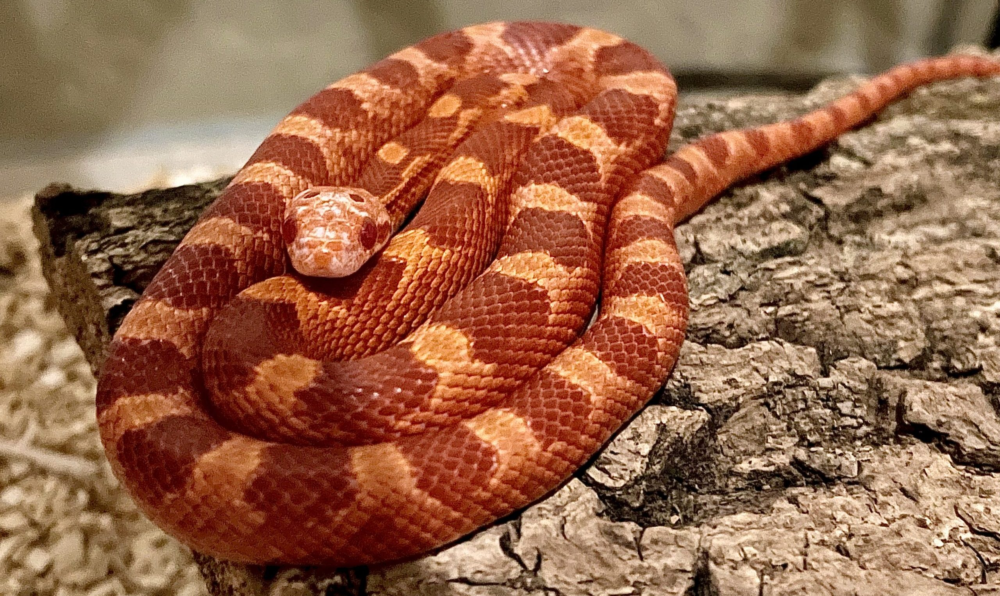

Non-Venomous Snakes

Non-venomous snakes do not have venom and usually capture their prey by
constriction or swallowing it whole.
Common Non-Venomous Snakes
- Python
- Rat Snake
- King Snake
- Garter Snake
Important Facts
- They are generally harmless to humans.
- Bites are rarely dangerous.
- They help control pests.
Non-venomous snakes are important for maintaining ecological balance.